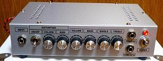

LM3886 Guitar Amp その3～完成編～
2009年11月12日 カテゴリー：ギターアンプ・ベースアンプ

さて、ジャックやポット、パワーアンプ部分とプリアンプ部分の配線が終わるといよいよ音出しとなります。オペアンプをつける前にレギュレーターの±15Vが出ているか確認します。最初私は7815と7915を逆につけているというアホなミスをしました。また、最初に音出しのテストをする際に音が小さくて失敗したかと勘違いしましたが、トーンのつまみをすべて0にしていたのが原因でした。フェンダータイプのトーン回路は結構音量が下がります。
音がちゃんと出たときはやはり感動します。電源ON-OFF時のポップノイズも特にありません。全体のノイズですが、少しハムノイズが出ているようです。
・ギターのボリュームとともに音量が変化するノイズ→ギターが拾っているノイズ
・ギターのボリュームが0のときに聞こえるノイズ→アンプが拾っているノイズ
と判定できるかと思います。
今回のノイズはパワーアンプの入力をアースに落としたときには消え、プリアンプのボリュームに関係なく出ていたノイズですので、プリアンプのボリュームからパワーアンプの入力の間で拾っているノイズのようです。夜静かなときは聞こえる程度で、ギターが拾うノイズの方が大きいので問題ないでしょう。
最大出力を測定したいところなんですが、私はオシロスコープなんて持ってないの適当にやってみます。ダミーロードは4Ω、30Wのセメント抵抗を2個直列にしたものを使いました。
入力に60Hzのサイン波を入力し、出力をテスターの交流電圧で測定してみました。ボリュームを上げるとどんどん電圧が上がっていきます。18Vぐらいになったところで測定をやめました。おそらく波形が歪んでしまって正確な値が出ていないのだと思われます。失敗です。このとき、電源電圧はボリューム0で±23V、ボリュームを上げていくと電圧は下がっていき±20Vで止まりました。ですのでLM3886のデータシートにより18Wぐらいは出ることがわかりました。
周波数特性もパソコンで測ろうと思っていたんですが、パソコンのマイク入力に過大電圧が入ってしまったみたいでマイク入力を壊してしまいました。まぁ特に面白い結果は出ないと思うので今後測定することはないでしょう。
音についてはまぁ普通だと思います。LM3886は歪みが少ないとのことなので、本来のギターの音が期待できるかもしれません。残念ながら私は良い耳でもないし文章の表現力もありませんので、あれこれ書くのはやめておきます。ただ、やはり自分で作ったものからは特別良い音が出てるような気分になりますね。
その1～構想編～に戻る
その2～製作編～に戻る